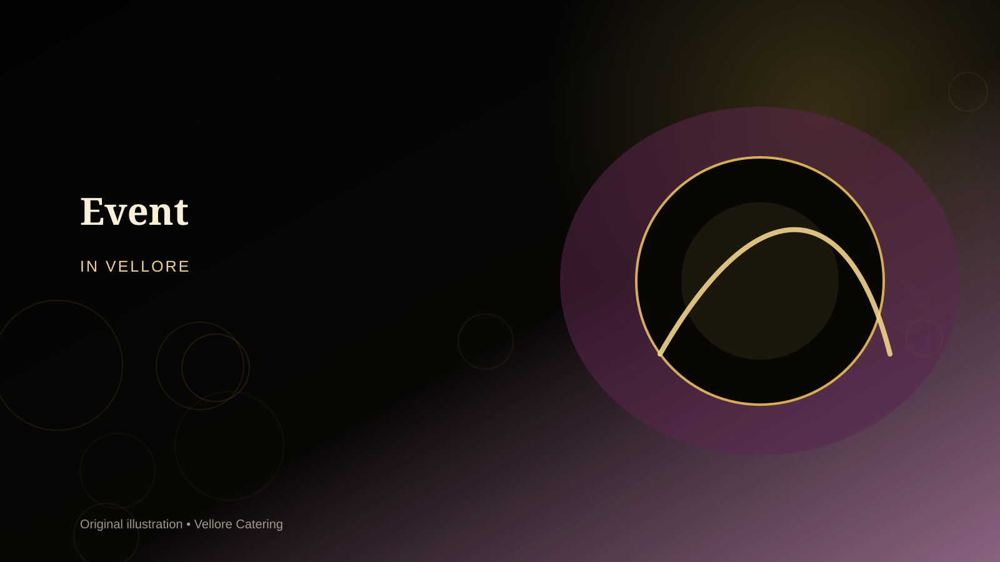
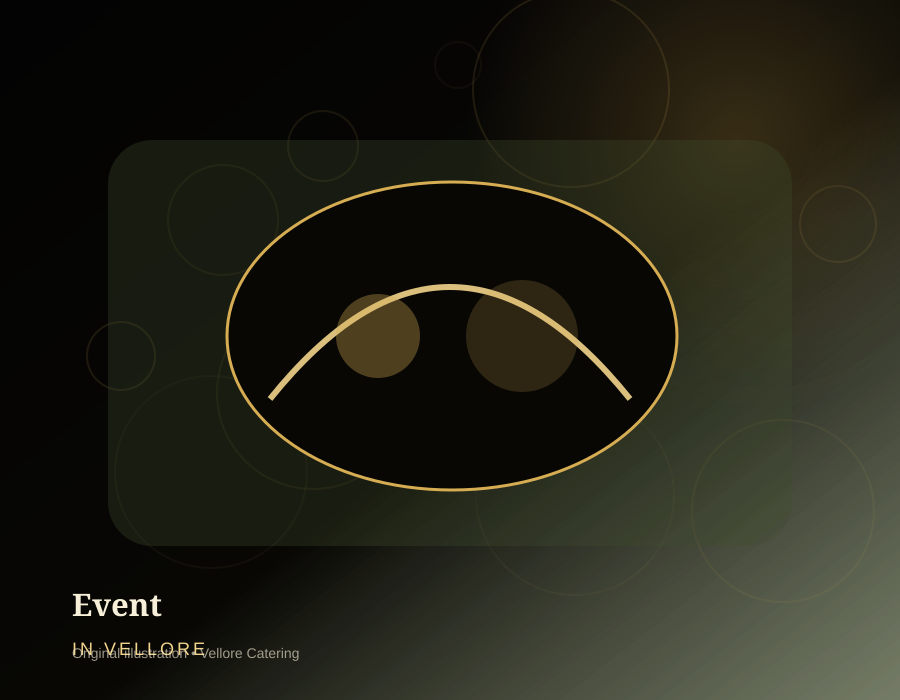
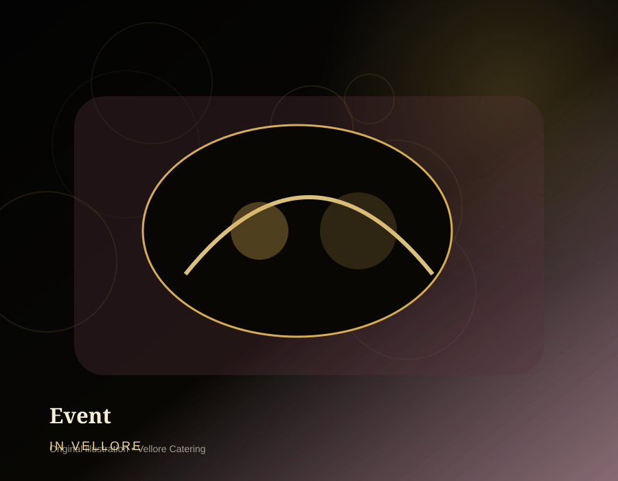

Purpose-built planning
The service plan starts with the practical needs of event catering: high-volume service, crew timing and fast guest movement.

Events & Entertainment For event catering, this supports high-volume service, crew timing and fast guest movement.
General event catering. Plan the menu, service format and event logistics around your guest list and venue.

Service overview For event catering, this detail is checked against the venue and guest profile.
Event Catering works best when menu, timing and service are planned together.
Event Catering is intended for general event catering. For this page, the planning emphasis is high-volume service, crew timing and fast guest movement.
Share the venue, approximate guest count, meal timing and food preferences. The catering scope can then be shaped around the real event rather than a generic package. The final event catering choice is confirmed with the event schedule.
Why choose us For event catering as a event, the detail is adapted before confirmation.
Clear planning before cooking helps reduce last-minute service problems. For event catering, this supports high-volume service, crew timing and fast guest movement.
The service plan starts with the practical needs of event catering: high-volume service, crew timing and fast guest movement.
Courses are selected to suit the expected guest profile rather than forcing a one-size-fits-all package onto your event. For event catering, this detail is checked against the venue and guest profile.
Setup, transport and service sequencing are planned around Vellore venues, access windows and your event timetable. The final event catering choice is confirmed with the event schedule.
The same enquiry details flow into WhatsApp so date, contact number and catering requirement are easy to continue with the team. For event catering as a event, the detail is adapted before confirmation.
What is included For event catering, this supports high-volume service, crew timing and fast guest movement.
The exact scope is finalised with the quotation; these are the normal planning components. For event catering, this detail is checked against the venue and guest profile.
Event formats The final event catering choice is confirmed with the event schedule.
Service can be scaled to suit the guest list, venue and timetable. For event catering as a event, the detail is adapted before confirmation.
General event catering
A compact version of event catering with a focused menu and simpler service flow.
Expanded staffing, replenishment and guest movement planning for a busier event. For event catering, this supports high-volume service, crew timing and fast guest movement.
Service adjusted to kitchen access, dining layout and timing restrictions at the selected venue. For event catering, this detail is checked against the venue and guest profile.
Cuisine choices For event catering, this supports high-volume service, crew timing and fast guest movement.
Keep one clear flavour direction or combine cuisines carefully. For event catering, this detail is checked against the venue and guest profile.
Customisation For event catering, this supports high-volume service, crew timing and fast guest movement.
The best menu is the one that fits your event rather than the longest menu. For event catering, this detail is checked against the venue and guest profile.
Adjust spice, familiar dishes and regional balance for the families or guests attending event catering.
Identify Jain, vegan, gluten-aware, allergy-related or other dietary needs early so the feasible menu can be discussed. The final event catering choice is confirmed with the event schedule.
Add or reduce sweets, starters, rice choices, breads and counters based on time, budget and guest expectations. For event catering as a event, the detail is adapted before confirmation.
Sequence food around the key moments of the event, not merely a generic lunch or dinner clock. For event catering, this supports high-volume service, crew timing and fast guest movement.
Live counters For event catering, this detail is checked against the venue and guest profile.
Counters should add theatre without creating queues or slowing the main meal. The final event catering choice is confirmed with the event schedule.
Service styles For event catering as a event, the detail is adapted before confirmation.
Venue layout, guest profile and meal duration influence the right format. For event catering, this supports high-volume service, crew timing and fast guest movement.
Guest capacity For event catering, this detail is checked against the venue and guest profile.
Capacity depends on menu complexity, venue facilities, staffing and service window. The final event catering choice is confirmed with the event schedule.
Focused service plans for smaller guest lists where freshness and timing matter more than a large buffet footprint. For event catering as a event, the detail is adapted before confirmation.
Balanced batch cooking and replenishment for typical family, community and business functions. For event catering, this supports high-volume service, crew timing and fast guest movement.
Additional counters, service lanes, holding equipment and staffing can be planned after venue and guest-count review. For event catering, this detail is checked against the venue and guest profile.
Event process The final event catering choice is confirmed with the event schedule.
A simple sequence keeps decisions clear. For event catering as a event, the detail is adapted before confirmation.
Share the date and tell us you are planning event catering in Vellore.
Discuss guest count, venue, meal timing, dietary needs and preferred service format. For event catering, this supports high-volume service, crew timing and fast guest movement.
Shortlist dishes, counters and service details; tasting can be discussed where appropriate and available. For event catering, this detail is checked against the venue and guest profile.
Freeze the agreed scope, event timings, logistics and commercial terms. The final event catering choice is confirmed with the event schedule.
Production, dispatch, setup, service and replenishment follow the confirmed event plan. For event catering as a event, the detail is adapted before confirmation.
Food quality & hygiene For event catering, this supports high-volume service, crew timing and fast guest movement.
Discuss food safety expectations at the same time as menu choices. For event catering, this detail is checked against the venue and guest profile.
Kitchen & infrastructure The final event catering choice is confirmed with the event schedule.
Good service starts before the food reaches the venue. For event catering as a event, the detail is adapted before confirmation.
Batch sizes are matched to the event catering guest estimate and serving window.
Buffet warmers, serving vessels, counters and dining accessories are scoped according to the final format. For event catering, this supports high-volume service, crew timing and fast guest movement.
Dispatch timing is coordinated with distance, venue access and setup time in and around Vellore. For event catering, this detail is checked against the venue and guest profile.
Critical service items and replenishment timing are reviewed before larger functions. The final event catering choice is confirmed with the event schedule.
Our chefs & team For event catering as a event, the detail is adapted before confirmation.
Different people own production, coordination and guest-facing service. For event catering, this supports high-volume service, crew timing and fast guest movement.
Coordinates cuisine balance, production sequence and consistency across batches. For event catering, this detail is checked against the venue and guest profile.
Handles preparation and finishing according to the finalised menu and quantities. The final event catering choice is confirmed with the event schedule.
Manages guest-facing service, replenishment and counter flow at the venue. For event catering as a event, the detail is adapted before confirmation.
Event gallery For event catering, this supports high-volume service, crew timing and fast guest movement.
Generated, copyright-free illustrations for planning inspiration; they are not presented as photographs of past client events. For event catering, this detail is checked against the venue and guest profile.
Food gallery The final event catering choice is confirmed with the event schedule.
These original illustrations are visual placeholders until you add your own real event photography. For event catering as a event, the detail is adapted before confirmation.

Case-study format For event catering, this supports high-volume service, crew timing and fast guest movement.
No client event is invented here; this transparent sample shows the planning logic. For event catering, this detail is checked against the venue and guest profile.
Illustrative planning scenario: a 563-guest event in Vellore with boxed meals, a 5-part menu and one live counter. The planning focus would be high-volume service, crew timing and fast guest movement. This is an example workflow, not a claim about a specific past client event. The final event catering choice is confirmed with the event schedule.
Customer testimonials For event catering as a event, the detail is adapted before confirmation.
This build intentionally contains no fabricated testimonials. Replace this notice only with feedback you have permission to publish. For event catering, this supports high-volume service, crew timing and fast guest movement.
When you receive verified feedback about event catering, add the customer-approved wording here with the event type and month. Avoid invented names, ratings or quotes.
Google reviews For event catering, this detail is checked against the venue and guest profile.
The website does not hard-code a star rating or review count because those values change. The final event catering choice is confirmed with the event schedule.
Use the live Google result to view current public feedback before booking. For event catering as a event, the detail is adapted before confirmation.
Venue types For event catering, this supports high-volume service, crew timing and fast guest movement.
Confirm access, water, power, loading space and dining layout before finalising the service plan. For event catering, this detail is checked against the venue and guest profile.
Areas we serve The final event catering choice is confirmed with the event schedule.
Availability and travel logistics are confirmed for the event date. For event catering as a event, the detail is adapted before confirmation.
Business base: 90/32, Subramanya Swamy Koil St, Kosapet, Vellore, Tamil Nadu 632001. For event catering, this supports high-volume service, crew timing and fast guest movement.
Pricing guide For event catering, this detail is checked against the venue and guest profile.
A responsible quote uses your actual requirements instead of an unrealistic universal per-plate figure. The final event catering choice is confirmed with the event schedule.
Higher or lower quantities change production, transport and staffing requirements. For event catering as a event, the detail is adapted before confirmation.
Additional starters, sweets, breads, premium ingredients and counters add preparation complexity. For event catering, this supports high-volume service, crew timing and fast guest movement.
Boxed Meals, counter service and full-service staffing have different equipment and labour needs. For event catering, this detail is checked against the venue and guest profile.
Distance, access time, kitchen availability, stairs/lifts and setup constraints can affect the quotation. The final event catering choice is confirmed with the event schedule.
Packages For event catering as a event, the detail is adapted before confirmation.
Package names describe scope only; final pricing follows the confirmed menu and event details. For event catering, this supports high-volume service, crew timing and fast guest movement.
A concise event catering menu with practical service and fewer moving parts.
A broader menu with extra courses, upgraded presentation and selected live service elements. For event catering, this detail is checked against the venue and guest profile.
A fuller event experience with more menu variety, live counters and enhanced guest-facing service. The final event catering choice is confirmed with the event schedule.
FAQs For event catering as a event, the detail is adapted before confirmation.
Useful answers before you send an enquiry. For event catering, this supports high-volume service, crew timing and fast guest movement.
For high-volume service, crew timing and fast guest movement, earlier booking gives more time for menu planning, staffing and venue coordination. Share your event date as soon as it is reasonably fixed so availability can be checked. For event catering, this detail is checked against the venue and guest profile.
Yes. Menu depth, spice level, vegetarian or non-vegetarian balance, service style, sweets, beverages and live counters can be adjusted after discussing your guests and venue. The final event catering choice is confirmed with the event schedule.
Enquiries can be planned for intimate functions as well as larger gatherings. The quotation and staffing plan depend on final guest count, menu, venue access and service format. For event catering as a event, the detail is adapted before confirmation.
Yes. Use the enquiry form on this page; it sends your name, contact number, event date and event catering request to the Vellore Catering WhatsApp number.
No single price is accurate for every event. Guest count, dishes, service staff, live counters, equipment, venue distance and service style all change the final quotation. For event catering, this supports high-volume service, crew timing and fast guest movement.
Food philosophy For event catering, this detail is checked against the venue and guest profile.
The goal is consistency, suitability and a pleasant guest experience. The final event catering choice is confirmed with the event schedule.
Dishes are selected to work together across the meal instead of building an oversized list with conflicting flavours. For event catering as a event, the detail is adapted before confirmation.
Preparation and finishing choices consider how long food travels, holds and reaches guests. For event catering, this supports high-volume service, crew timing and fast guest movement.
Tamil and South Indian staples can remain central while other cuisines are added only where they fit the event. For event catering, this detail is checked against the venue and guest profile.
Book / enquire The final event catering choice is confirmed with the event schedule.
Send the three essentials first; the discussion can continue on WhatsApp. For event catering as a event, the detail is adapted before confirmation.
Include your venue and approximate guest count in the WhatsApp conversation after the form opens. For event catering, this supports high-volume service, crew timing and fast guest movement.
Name, contact number and event date are enough to start the conversation. For event catering, this detail is checked against the venue and guest profile.
Contact For event catering, this supports high-volume service, crew timing and fast guest movement.
Call or WhatsApp for date availability and a menu discussion. For event catering, this detail is checked against the venue and guest profile.
Map & directions The final event catering choice is confirmed with the event schedule.
Open the map for directions; event service is coordinated separately to your venue. For event catering as a event, the detail is adapted before confirmation.